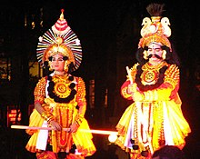
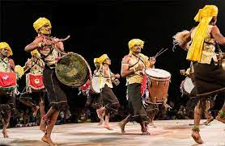

State Food
State Dance


State Tourism


State Wildlife

One State Many Worlds
Karnataka is often referred to as One State Many Worlds because
it is home to a diverse range of cultures, languages, and religions. The state is situated in the southern part
of India and is bordered by the Arabian Sea, Goa, Maharashtra, Kerala, and Tamil Nadu.